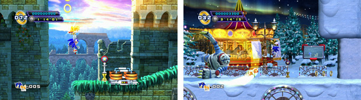
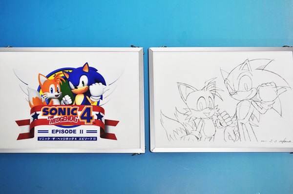

ソニック関連のイベント情報を紹介
2012.04.20

2012年5月16日にPlayStation®3版、Xbox 360®版が配信予定の『ソニック・ザ・ヘッジホッグ4 エピソードII（以下、エピソードⅡ）』について、2012年4月28日、29日の2日間、お台場の「ジョイポリス ナノ」にて本作の先行体験会を実施いたします。
『エピソードII』の配信に先駆けて行われる先行体験会では、本作より「シルバニア キャッスル ACT1」と「ホワイト パーク ACT1」のステージを遊ぶことができます。
ソニックとテイルスによるタッグアクションや、美麗なステージグラフィックなど、本作の魅力をいち早くご体験ください。さらに4月28日14時～15時には、ソニックシリーズプロデューサー・飯塚隆サイン会の実施を予定していますので、奮ってご参加ください。

また、本会場でもある「ジョイポリス ナノ」では4月14日～5月15日の期間、『エピソードII』コンセプトアート展示コーナーを開設いたします。ソニックシリーズデザイナー・上川祐司による原画をはじめとしたコンセプトアートの数々をご観覧ください。その他、物販コーナーにてソニックグッズを購入した方先着200名様に"「ソニック×ぷよぷよ」カレンダー"をプレゼントいたします。この機会もお見逃しなく！
| 日程 | 2012年4月28日、29日 11:00～18:00 |
|---|---|
| 場所 |
ジョイポリス ナノ （東京都港区台場1丁目6番1号 デックス東京ビーチアイランドモール 3階） |
| 内容 | PlayStation®版『ソニック・ザ・ヘッジホッグ４ エピソードⅡ』より、ステージ「シルバニア キャッスル ACT1」「ホワイト パーク ACT1」を遊ぶことができます。 |
| サイン会 |
＜日程＞ 2012年4月28日 14:00～15:00予定 ・ソニックシリーズプロデューサー飯塚隆のサイン会を実施 ・時間内であればどなたでもご参加いただけます。 |
| 日程 | 2012年4月14日～5月15日 11:00～21:00 |
|---|---|
| 場所 |
ジョイポリス ナノ （東京都港区台場1丁目6番1号 デックス東京ビーチアイランドモール 3階） |
| 内容 | 『ソニック・ザ・ヘッジホッグ４ エピソードⅡ』コンセプトアートの展示 |
| 物販 | 物販コーナーにてソニックグッズを購入した方 先着200名様に、「ソニック×ぷよぷよ」カレンダー"をプレゼント |